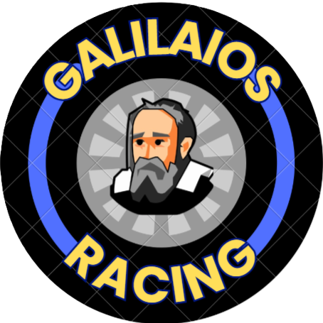

Aεροδυναμικές
Χαμηλή αεροδυναμική αντίσταση, υψηλή κάθετη δύναμη, με αμάξωμα και πτέρυγες ρυθμισμένες με απόλυτη ακρίβεια.

Με πάθος για την καινοτομία, τη μηχανική και την ταχύτητα, στόχος μας είναι να σχεδιάσουμε και να κατασκευάσουμε ένα αγωνιστικό μοντέλο υψηλής απόδοσης.
Έχουμε σκοπό να φτάσουμε αρχικά στον Πανελλήνιο και ύστερα στον Παγκόσμιο Διαγωνισμό της “F1 in Schools”.
Μέσω των Social Media, θα θέλαμε να γίνουμε γνωστοί μέσα στην Ελλάδα και να βρούμε αξιόπιστους χορηγούς, ώστε να μας στηρίξουν στο ταξίδι στο STEM Racing.
Το STEM Racing (πρώην F1 in Schools) είναι ένα διεθνές εκπαιδευτικό πρόγραμμα και διαγωνισμός στο οποίο μαθητές ηλικίας 9–19 ετών πρέπει να σχεδιάσουν και να κατασκευάσουν μια μινιατούρα μονοθεσίου F1 χρησιμοποιώντας εργαλεία σχεδιασμού CAD/CAM και CAE.
Επιπλέον, προωθεί τις δεξιότητες STEM (Science, Technology, Engineering, Mathematics) μέσω της βιωματικής μάθησης. Παράλληλα, οι ομάδες διαγωνίζονται σε μια πίστα 20 μέτρων που αποτελείται από 4 λωρίδες. Το F1 μοντέλο τροφοδοτούνται από αμπούλα CO2. Οι διαγωνιζόμενοι καλούνται να σχεδιάσουν το μονοθέσιο τους μέσω του προγράμματος “Autodesk Fusion” ενώ για την αεροδυναμική ανάλυση αξιοποιούν προγράμματα CFD (Autodesk, Ansys).
Εν συντομία, το STEM Racing μετατρέπει τη μάθηση σε ένα συναρπαστικό αγώνισμα, συνδυάζοντας την τεχνολογία, τη μηχανική, την επιχειρηματικότητα και την ταχύτητα.
Χρησιμοποιούμε το 'Autodesk Fusion' για τον σχεδιασμό του αυτοκινήτου μας.
Χαμηλή αεροδυναμική αντίσταση, υψηλή κάθετη δύναμη, με αμάξωμα και πτέρυγες ρυθμισμένες με απόλυτη ακρίβεια.
Το μονοθεσιο μας ειναι κατασκευασμένο από Πολυβινυλοχλωρίδιο (PVC).
Find Us:
Instagram: @galilaios_racing
TikTok: @galilaios_racing